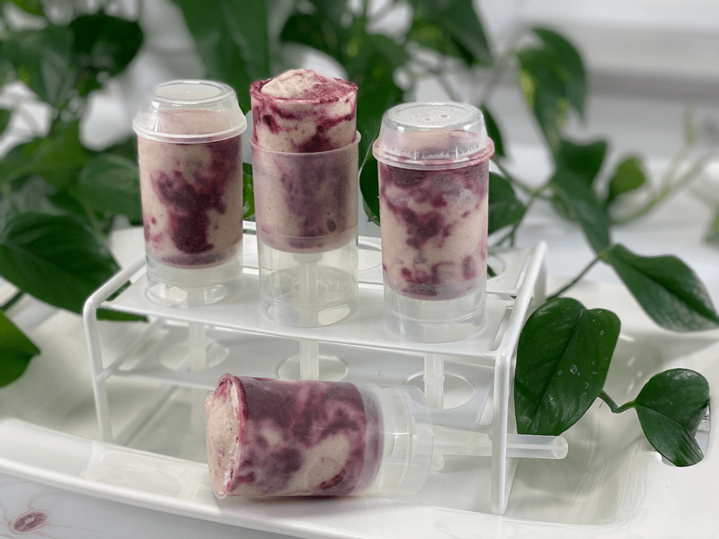
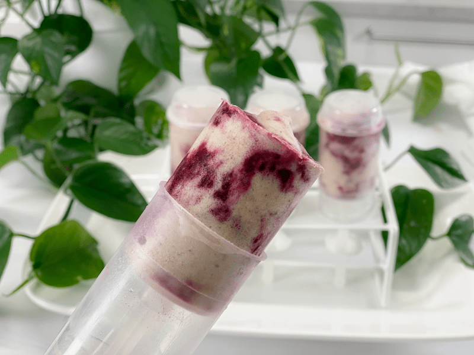

Cherry Rhubarb Banana Ice Cream Push Pops | Sugar-Free
Are you craving something sweet with a slight tart twang? A frozen treat that has no added sugar or preservatives? A dessert that is loved by all ages? A treat that will make your inner child giggle? Well, then you better look elsewhere! KIDDING. I woke up on the goofy side of the bed today. On a serious note, this frozen delight is everything I just described.

How Much Does This Recipe Make?
That’s a great question and one that I didn’t document. I am a free-flowing food-medium artist, and I am never satisfied with using a whole recipe as-is. Variety adds spice to our daily menu. So when I made the sauce and banana ice cream, I allowed my inner child out to play. I set some aside to eat with a spoon, I made some push pops, and I made a couple of fancier bundt-style desserts with it.
For the popsicles, I used my reusable push-pop molds, but a person can use any popsicle mold, including good old 3oz Dixie cups (which are perfect for little ones). So, depending on what you use, how big or small they are…well, that will determine how many this recipe will make.
Banana Ice Cream
Banana Ice Cream is magic. It’s been around for a long time, but if you haven’t tried it, I highly recommend it. Get your young ones involved, because it’s pretty cool how frozen bananas can turn into something so thick, creamy, and refreshing.
- Start with RIPE bananas–these will give a sweeter flavor to the ice cream. If they aren’t ripe enough, the bananas will have an astringent flavor. So, use bananas that have spotted skins.
- Peel the bananas and slice them into coin shapes (this makes it easier for your food processor to break them down). Place them in a single layer on a baking pan that fits in the freezer.
- Freeze until frozen hard. If you froze more than 4 cups, place the extra frozen coin shapes in a freezer-safe container and pop back in the freezer for another time.
- To make the ice cream, simply put 4 cups of sliced frozen bananas in the food processor fitted with the “S” blade. Process until it turns thick and CREAMY. Stop the machine occasionally to scrape down the sides. That’s it. No other ingredient needs to be added.

Make Every Bite Count
Enjoy the process. I hereby permit you to let YOUR inner child out while creating frozen masterpieces with this recipe. When we take the time to slow down and breathe while working in the kitchen, it’s incredible how much our own creativity comes forth. The bottom line is that I want you to have fun when working with food!
I hope you enjoy the simple things in life. Sending you love and blessings, amie sue
 Ingredients
Ingredients
Yields 2 cups
- 2 cups rhubarb, diced
- 1 cup organic cherries, pitted
- 1 Tbsp chia seeds
- 1/4 tsp sea salt
- Sweetener to taste
- 4 cups diced frozen banana slices
Preparation
Cherry Rhubarb Sauce
-
In a medium saucepan, combine the rhubarb, cherries, and salt. Cover, let cook down, and bring to a gentle simmer over low-medium heat, stirring frequently.
- Once the two have cooked down, taste-test (careful, it will be hot) and see if you want to add any sweetener. If so, now is the time.
- Adding salt to the base will help round out the sweet and sour flavors.
- A long, slow simmer drives the moisture out of the fruit, helping to preserve and thicken it at the same time.
- If the mixture starts sticking to the base of the pan, the temperature is too high; reduce it.
-
Once both fruits are soft, it’s time to blend into a thick sauce. Add the hot mixture to the blender with the chia seeds and stevia (ot sweetener of choice).
- Make sure it has cooled down completely before adding it to the banana ice cream. Otherwise, you will have a soupy mess on your hands.
Banana Ice Cream
- Freeze ripe, sliced bananas in the freezer (read how to do this up above). Once they are frozen, they are ready for use.
- Remove bananas from the freezer and place 4 cups into a high-powered blender or food processor. Blend until light, fluffy, and creamy. See the photos below on how the texture changes throughout the blending process. It’s magic.
Assembly
- Have the popsicle molds ready. I used reusable push-pop molds, but you can use any mold, including Dixie cups!
- Place the banana ice cream into a bowl and pour the sauce next to it. GENTLY fold the two together, which will help create more of a swirl effect to your frozen treat.
- Fill the molds, working out any air bubbles as you do.
- Place in the freezer and enjoy them once frozen. They should keep about 3 months in the freezer, but make sure they are well-sealed, so they don’t get freezer-burnt.
© AmieSue.com